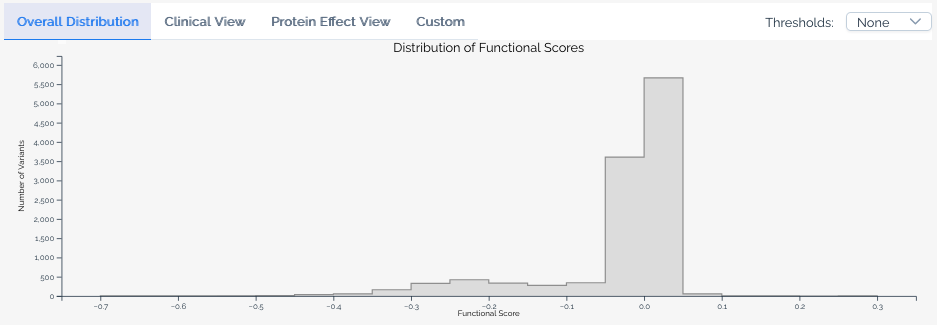
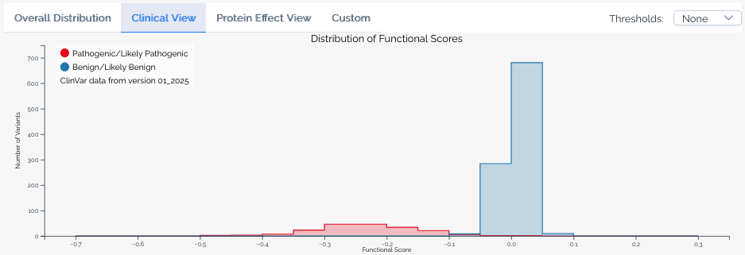
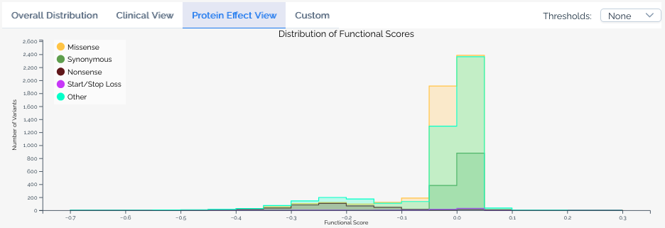
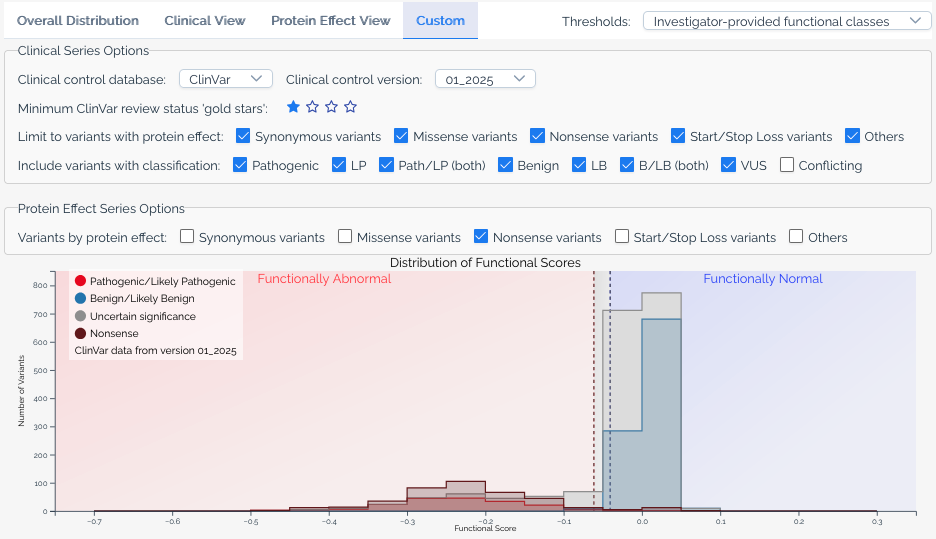
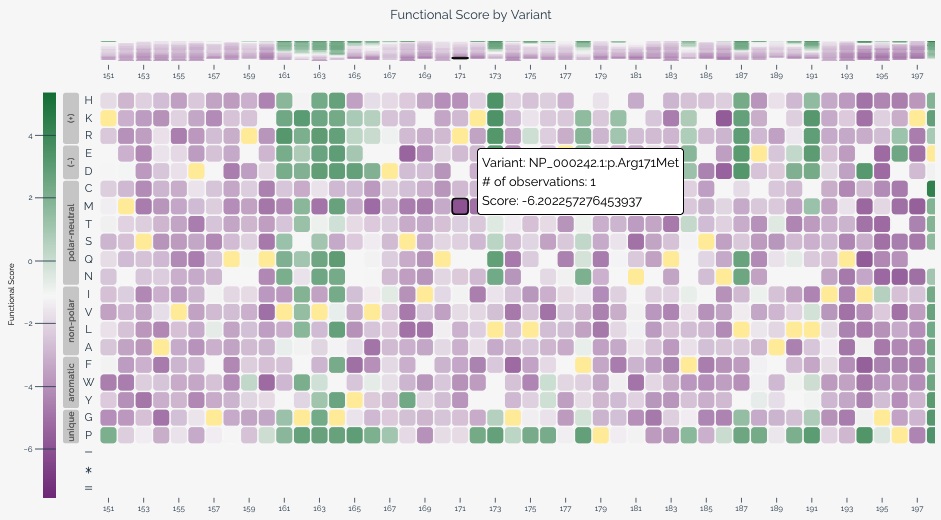
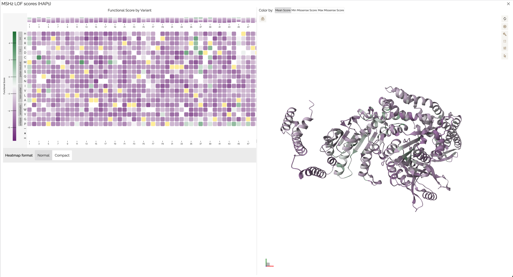

Visualizations¶
MaveDB offers several built-in visualizations to help users explore and interpret variant effect data. These visualizations are automatically generated for published score sets and displayed on the score set details page.
Linked visualizations
Selecting a variant in any visualization highlights it across all other visualizations on the page. For example, clicking a cell in the heatmap will highlight the corresponding bin in the histogram.
All visualizations can be exported as SVG images using the download button underneath the score set metadata.
Histogram¶
The histogram displays the distribution of variant effect scores within a score set. Use the tab bar above the histogram to switch between available views — not all views are available for every score set, depending on the data and annotations present.
Hovering over a bin reveals the number of variants in that score range for each series, and shows which classification ranges the bin overlaps when a score calibration is selected.
Base view¶
The default view shows the overall score distribution for all variants in the score set.
{kind=link}

Clinical view¶
Available when a score set has been linked to ClinVar annotations. This view overlays the distribution of scores for variants classified as Pathogenic or Likely pathogenic and Benign or Likely benign in ClinVar, allowing users to assess how well the assay segregates known clinical variants. The ClinVar version used is always shown in the histogram legend.
{kind=link}

Protein effect view¶
Available when a score set includes variant effect predictions. This view overlays the distribution of scores for variants predicted to have different effects on the protein, such as missense, nonsense, and synonymous variants.
{kind=link}

Custom view¶
The custom view gives users full control over the histogram. Available options include:
- ClinVar version -- Select which version of ClinVar annotations to use.
- Gold stars threshold -- Filter ClinVar variants by their review status (star rating).
- Additional significance categories -- Add series for classifications beyond pathogenic and benign, such as
Uncertain significanceandConflicting classifications. - Protein effect filters -- Limit series to variants with specific predicted protein effects, or add separate series for different effect types.
- Calibration overlays -- When a score set has score calibrations, overlay functional classification ranges on the histogram.
{kind=link}

Heatmap¶
The heatmap provides a two-dimensional view of variant effect scores across the target sequence, with positions along the horizontal axis and substitutions along the vertical axis. This visualization is particularly useful for identifying positional patterns in variant effects.
When variants are provided at the nucleotide level, users can toggle between nucleotide and amino acid views using the controls below the heatmap. In amino acid view, residues are ordered by hydrophobicity using the Kyte-Doolittle scale and grouped by chemical class based on values from Enrich2.
Each cell represents a specific variant at a given position. Color intensity indicates the variant effect score, and wild-type variants are shown in yellow. Hovering over a cell reveals the variant's score, classification (if applicable), and HGVS notation. For long target sequences, you can scroll horizontally to explore the full heatmap.
When a baseline score is available from a score calibration, the heatmap color scale centers the normal color (purple) at the baseline score to provide better visual contrast for variants that deviate from expected function.
{kind=link}

Protein structure viewer¶
The protein structure viewer provides an interactive 3D view of variant effect scores mapped onto a protein structure using Mol*. This visualization is available when the score set's target can be linked to a UniProt accession — either because the target was defined with a UniProt identifier, or because MaveDB was able to match the target sequence to a UniProt entry during variant mapping. If you don't see the structure viewer for your score set, the target may not have a matching UniProt record.
The viewer displays a side-by-side heatmap and 3D structure sourced from the AlphaFold Protein Structure Database, with a color gradient applied based on the mean variant effect score at each position. Users can:
- Rotate, zoom, and pan the 3D structure to explore it from any angle.
- Change the color scheme to visualize different score metrics or classifications.
- Click a residue on the structure to view its associated variant effect scores.
- Click and drag on the heatmap to select a range of positions, highlighting the corresponding region on the structure.
- Export the view as a PNG image using the settings menu on the right side of the viewer.
{kind=link}

See also¶
- Score calibrations -- learn how calibration data drives classification overlays in histograms and heatmaps.
- External integrations -- details on ClinVar annotations and VEP predictions shown in visualizations.
- Downloading data -- download the score and count data behind these visualizations.
- Key concepts -- understand what score sets represent in the MaveDB data model.